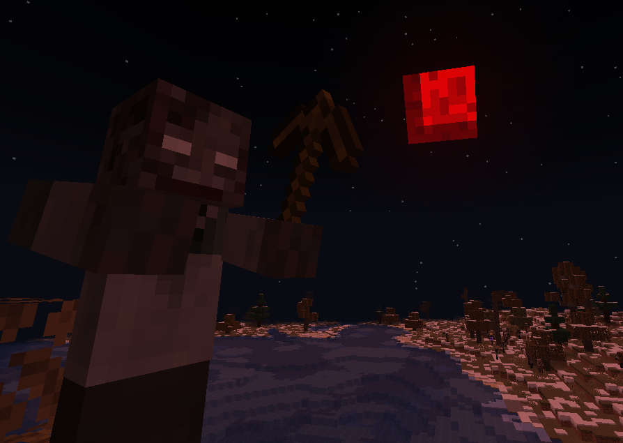
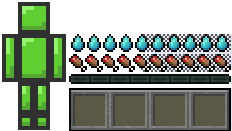
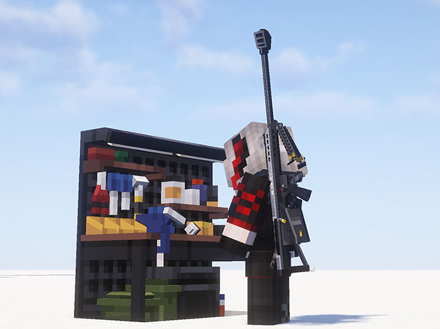
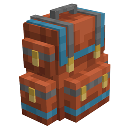

Zombies
Al ser un survival Zombie solo abran estos, pero tienen una mejora significativa en su comportamiento. Además, se añadieron 2 mutantes: O'Blood y The Fungus.
Salud y Alimentación
Reemplazamos la barra de vida común por un sistema de vida que va por partes, además agregamos una barra de sed. Ahora tienes que cuidar tanto tu hambre como tu sed.
Armas y Armaduras
Cansado de las espaditas corrientes? Con este mod podrás ensamblar armas como rifles, escopetas u otros.
Extras
Sanity, backpacks, Enhanced Celestials: estos 3 mods añaden mochilas que van de niveles, un sistema de salud mental y 3 lunas (Blood Moon, Harvest Moon, Blue Moon).